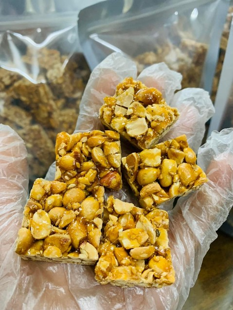
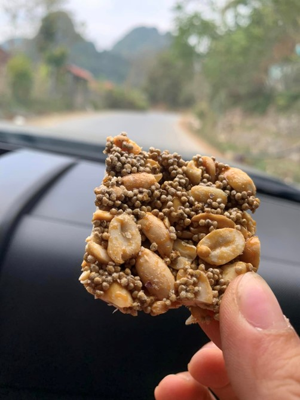
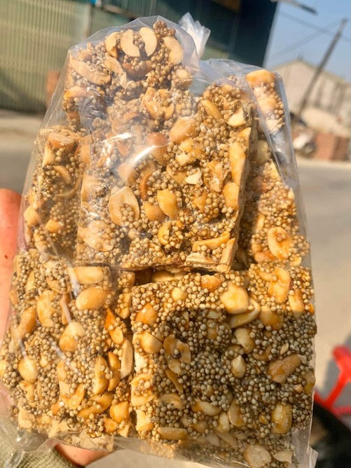
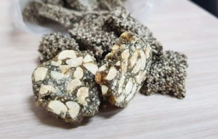

Kẹo lạc
Kẹo lạc là món quà bình dị, đơn sơ, nhưng để làm ra một thanh kẹo ngon, người làm kẹo phải cẩn thận trong khâu chọn nguyên liệu, tỷ lệ pha trộn, cách nấu. Tuy được tự làm tại gia dễ dàng, nhưng để đạt đến độ ngon tinh tế, làm kẹo cần có những kinh nghiệm, bí quyết riêng, mang tính gia truyền. Bà Nguyễn Thị Hạnh, phố Hòa Bình, thị trấn Quảng Uyên là người có hơn 40 năm nghề kẹo lạc chia sẻ: để làm được món ăn đơn giản như vậy đòi hỏi sự kiên nhẫn, tỉ mỉ, đặt tâm vào công việc mới được mẻ kẹo ngon. Nếu nóng vội, sơ sài khâu nào thôi sẽ không được vị ngọt sắc, thơm giòn của kẹo lạc nữa.
Để làm món kẹo lạc, đầu tiên phải chọn được hạt lạc đều, bóng. Lạc ngon phải là lạc đỏ có vị ngậy, bùi hơn lạc trắng. Mỗi mẻ kẹo lạc thường làm từ 3 đến 4 kg lạc, rang trong khoảng 1 giờ. Khi rang lạc để lửa nhỏ vừa phải, rang đều tay tránh hạt lạc bị cháy. Lạc giang chín, ủ cho giòn rồi tách sạch vỏ.
Kẹo lạc ngon, quan trọng nhất chính là khâu nấu đường. Dùng cả 2 loại đường trắng và đường phên hòa trộn với nhau khi đun mới tạo được màu vàng, đẹp và có độ giòn. Thông thường với 4 kg lạc dùng tỷ lệ 2.000 gam đường trắng/200 gam đường phên. Trước tiên đun đường tan chảy rồi dùng túi lưới hoặc vải màn để lọc đường, loại bỏ cặn. Sau đó đun tiếp cho đến khi đường có màu đẹp và đạt được độ giòn. Để đường đạt đến độ giòn, dẻo vừa phải không bị đắng, người làm chú ý đun lửa đều không bị ám khói. Nếu đun mà lửa quá to, đáy nồi bị cháy đường sẽ có vị đắng; nếu chưa đủ lửa, đường cô đặc sẽ dễ bị tan chảy, khi nhai bị dính, khó ăn. Thời gian nấu đường kéo dài từ 45 đến 60 phút.
Khi nấu xong, bắc chảo đường ra, đổ lạc vào đảo đều tay. Quá trình trộn, đảo lạc chừng 30 phút. Sau đó tiến hành lăn và thái kẹo lạc thành miếng.
Kẹo lạc Quảng Uyên chế biến hoàn toàn thủ công, không hề có phụ gia, chất bảo quản thực phẩm. Đây là lý do để thực khách nhớ và tìm đến với loại đặc sản truyền thống của đất Quảng Uyên.